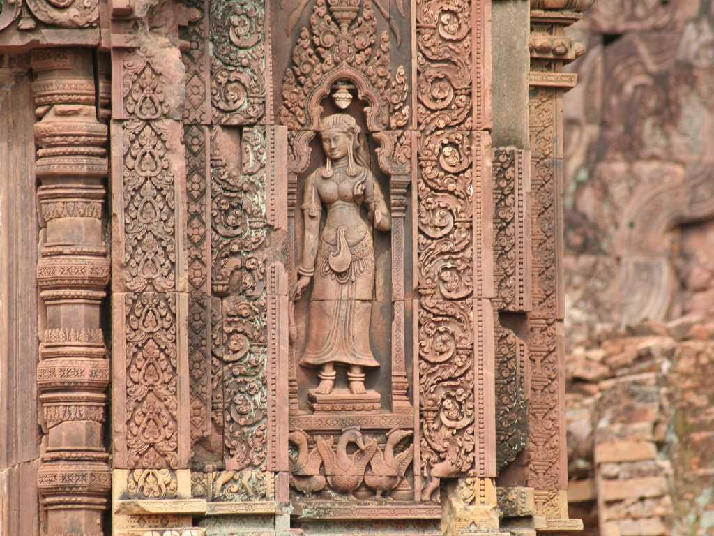
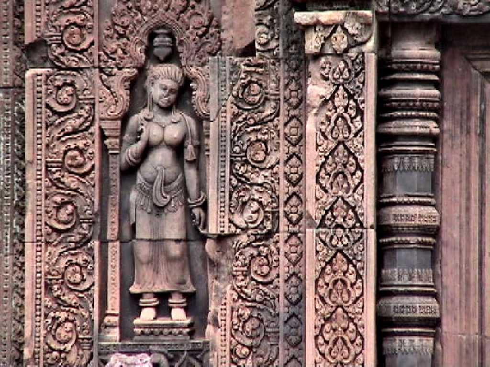
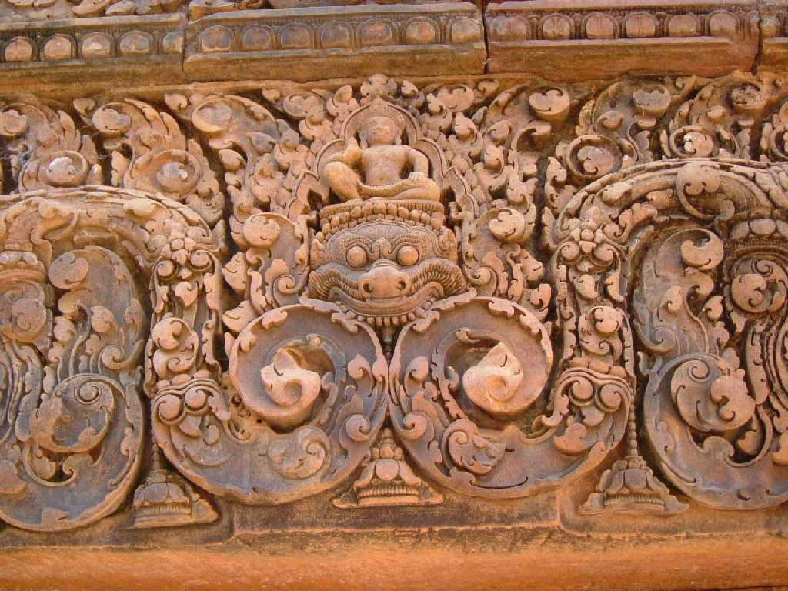

Banteay Srei
フランス人探検家マルローが東洋のモナリザと称え持ち出そうとした正面左の天女のレリーフ

Apsara
９６７年ラージェンドラヴァルマン王により着手され息子のジャヤーヴァルマン５世が完成させた赤砂岩で創られたバンテアイ(砦)スレイ(女)は精巧で彫りの深い美しい彫刻で覆われたアンコール美術の至宝と言われ寺院正面右のアプサラも出迎えてくれる

Siva
寺院入口のシバ神とその彫刻は綺麗に残っている